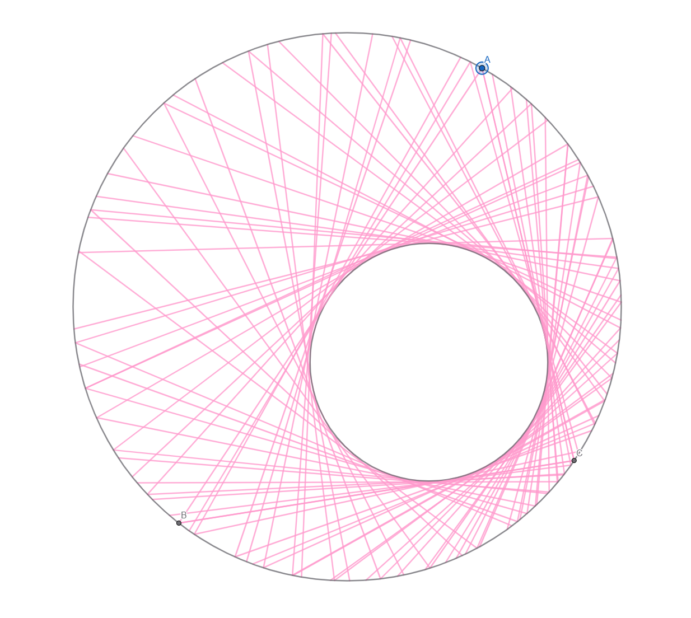
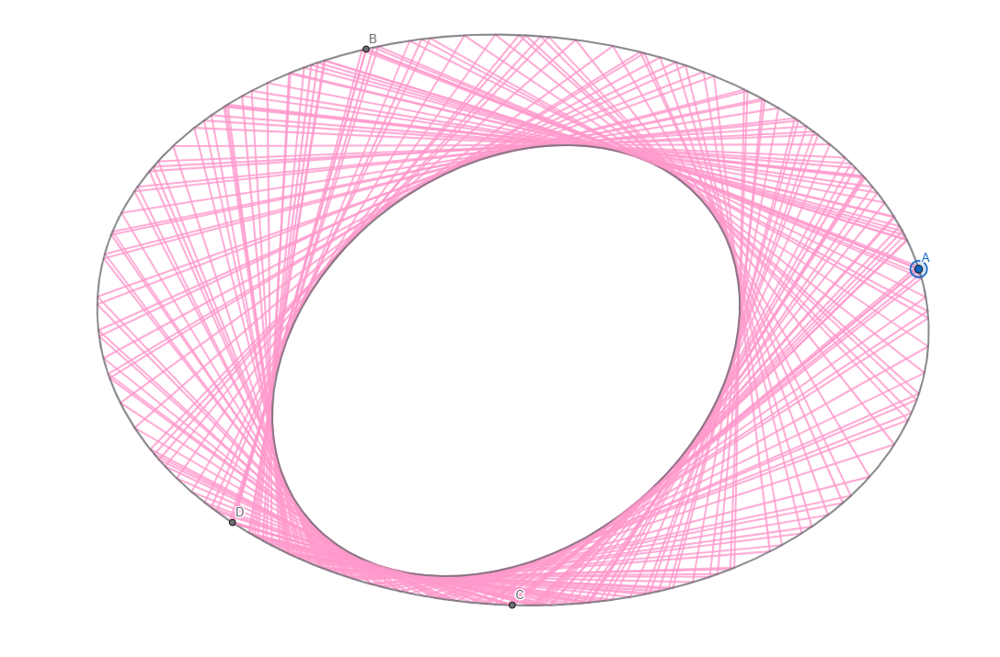

这是为什么我认为彭赛列定理是数学中最美的定理，却似乎无人知晓。
在网上，如果你搜索"数学中最美的定理"，你最终可能会得到欧拉公式、费马大定理、巴塞尔问题等结果。
虽然从一个数学爱好者的角度来看，我也认为这些确实很美，但大多数没有数学背景的人肯定无法领略到它们的美妙之处。
然而，我最近在欧式几何/射影几何中发现了一个看着就非常美丽的定理，名叫彭赛列定理。
该定理如下：
给定两个二次曲线，一个在另一个内部。给定外二次曲线上的一个点
如果存在一个点
不明白我是什么意思？你不需要明白。现在我不会做任何解释，请尽情欣赏它的美丽吧。

